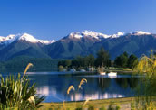

Fiordland
Fiordland National Park offers some of the world's most spectacular scenery. The Park is home to many of New Zealand's most famous walks including the Milford Track. This unspoilt land made up of rugged, bush-clad mountainous fiords is a must visit.
Te Anau
The gateway to the park is Te Anau, a quiet little town set amongst some of the most glorious scenery the country has to offer. The township lies at the southern end of Lake Te Anau, the second largest lake in New Zealand. The beauty of the lake is enhanced by its 3 arms which extend deep into the flora covered mountains. Lake Te Anau was formed by a huge glacier thousands of years ago. It stretches 53 km north and is up to 10 kilometres at its widest point. Te Anau is the launching point for many great hikes including the Milford, Kepler, Hollyford, Routeburn and Dusky tracks.
Milford Sound
A 120 km drive north of Te Anau brings you to Milford Sound, one of the most spectacular places in New Zealand which you simply must not miss. Words can't express what a powerful and moving experience it is to actually be there. The Sound itself is 22 kilometres long and is home to the impressive Mitre Peak, which stands at 1695 metres (over 5000 feet). The huge bush clad Mountains rise steeply (almost vertically) out of the calm serene waters of the sound to astonishing snow - capped heights. Milford Sound is located in one of the highest rainfall areas in New Zealand. Several metres fall each year, and when it rains, it really pours.